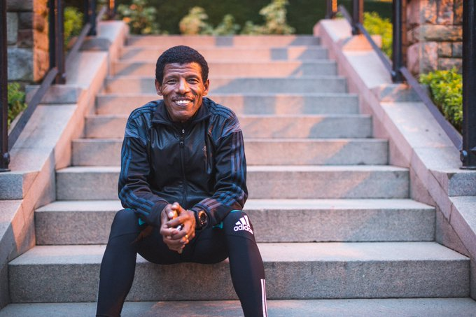

Haile Gebrselassie
Born 1973
The Legend of Long Distance Running
Haile Gebrselassie is a retired Ethiopian long-distance track and road running athlete. He won two Olympic gold medals over 10,000 meters and four World Championship titles in the event. He has also set numerous world records in distances ranging from 5,000 meters to the marathon.
Career Highlights
- Two-time Olympic gold medalist in 10,000 meters (1996 & 2000)
- Four-time World Champion in 10,000 meters
- Broke 27 world records
- Won Berlin Marathon four times consecutively
- Set the marathon world record in 2008